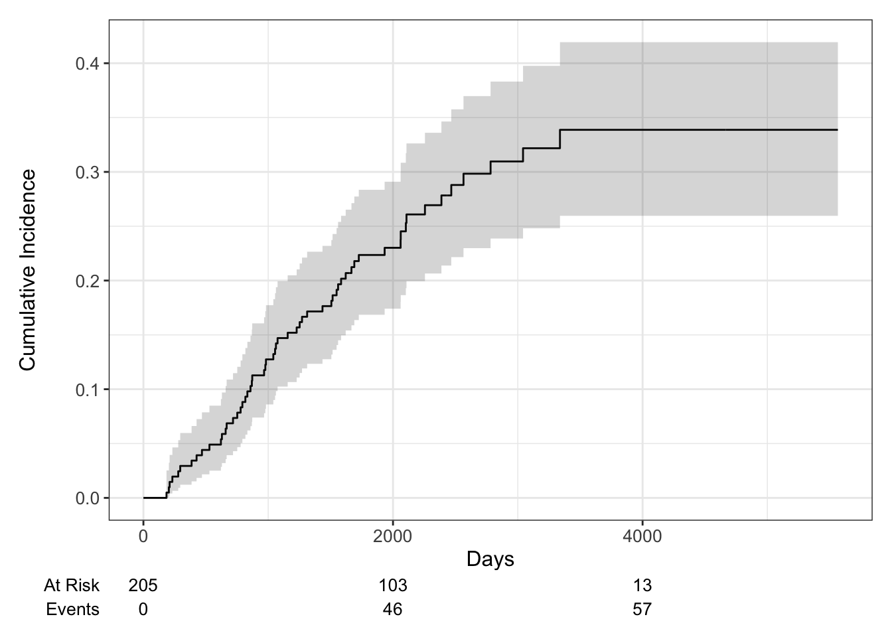
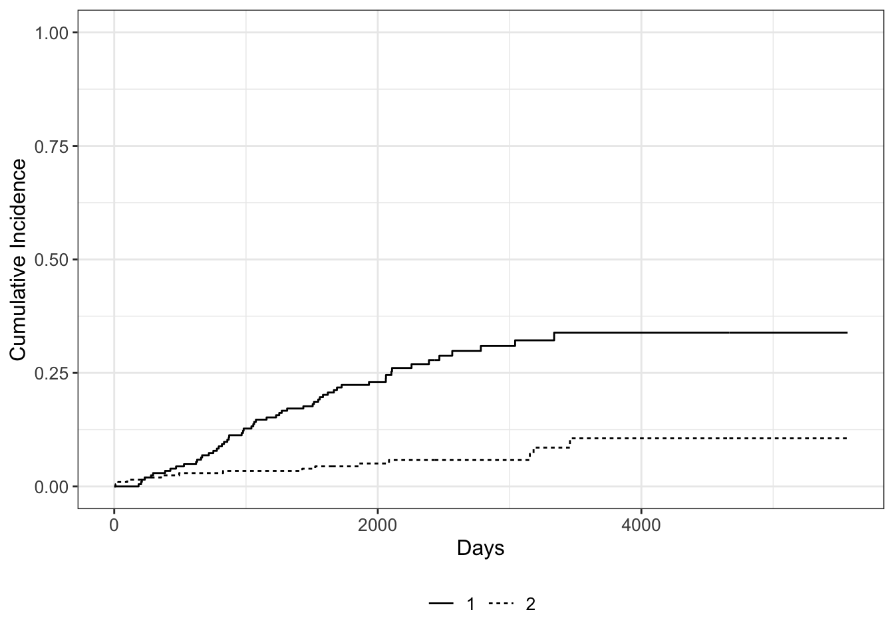
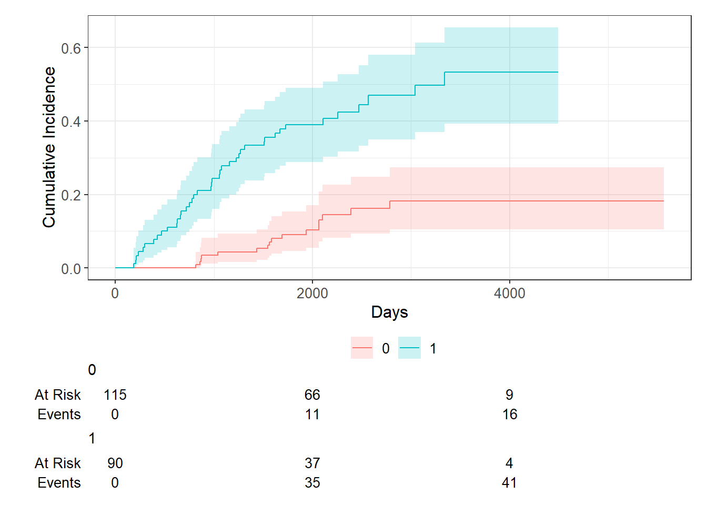

Survival Analysis - Competing Risk
Competing Risk
Introduction
Competing risk are said to be present when a patient is at risk of more than one mutually exclusive event, such as death from different cause which will prevent any other from happening. Competing risk models provide real world probabilities of death when competing events are present as opposed to standard survival models by allowing us to separate the probability of event into different causes.
Examples:
- recurrence
- death from disease
- death from other causes
- treatment response
In presence of competing events, the standard product-limit method of estimating survivor function for the event of interest yields biased results as the probability of occurrence is modified by an antecedent competing event.
The biggest drawback of competing risks analysis is the requirement that times for different event types be independent or at least that each event be noninformative for the others.
The fundamental problem that may lead to the need for specialized statistical methods is unobserved dependence among the various event times. For example, one can imagine that patients who recur are more likely to die, and therefore times to recurrence and times to death would not be independent events.
There are two approaches to analysis in the presence of multiple potential outcomes:
- Cause-specific hazard of a given event: this represents the rate per unit of time of the event among those not having failed from other events
- Subdistribution hazard of a given event: this represents the rate per unit of time of the event as well as the influence of competing events
Each of these approaches may only illuminate one important aspect of the data while possibly obscuring others, and the chosen approach should depend on the question of interest.
When the events are independent (almost never true), cause-specific hazards is unbiased. When the events are dependent, a variety of results can be obtained depending on the setting.
Cumulative incidence using 1 minus the Kaplan-Meier estimate is always >= cumulative incidence using competing risks methods, so can only lead to an overestimate of the cumulative incidence, though the amount of overestimation depends on event rates and dependence among events.
To establish that a covariate is indeed acting on the event of interest, cause-specific hazards may be preferred for treatment or prognostic marker effect testing. To establish overall benefit, subdistribution hazards may be preferred for building prognostic nomograms or considering health economic effects to get a better sense of the influence of treatment and other covariates on an absolute scale.
Type-specific hazards
As before, let \(T_{i}\) be a random variable denoting the time of death for person \(i\). Now let \(J_{i}\) be a random variable denoting the type of death that occurred to person \(i\). Thus, \(J_{5}=2\) means that person 5 died of cancer. We now define \(h_{i j}(t)\), the hazard for death type \(j\) at time \(t\) for person \(i\), as follows:
\[h_{i j}(t)=\lim _{\Delta t \rightarrow 0} \frac{\operatorname{Pr}\left(t<T_{i}<t+\Delta t, J_{i}=j \mid T_{i} \geq t\right)}{\Delta t}, \quad j=1, \ldots, 5\]
The overall hazard of death is just the sum of all the typespecific hazards: \[h_{i}(t)=\sum_{j} h_{i j}(t)\] Based on the type-specific hazards, we can also define type-specific survival functions: \[S_{j}(t)=\exp \left\{-\int_{0}^{t} h_{j}(u) d u\right\}\]
we can define the hypothetical variable \(T_{i j}\) as the time at which the \(j_{t h}\) event type either occurred to the ith person or would have occurred if other event types had not preceded it. In other words, we suppose that a person who dies of cancer at time \(T_{2}\) would have later died of heart disease at time \(T_{1}\) if the cancer death had not occurred. For a given set of \(T_{i j} \mathrm{~s}\), we only observe the one that is smallest. If we further assume that the \(T_{i j} \mathrm{~s}\) are independent across event types, we can say that \[ S_{i j}(t)=\operatorname{Pr}\left(T_{i j}>t\right) \] That is, the type-specific survival function gives the probability that an event of type j occurs later than time t.
Non-informative
If the estimate is to be unbiased, the censor must be uninformative. For competitive risks, we must make exactly the same assumptions. In other words, we must assume that, on the condition of covariates, those who are at a particularly high (or low) risk of one type of event will not (or less) experience other types of events. Therefore, if we know that someone died of heart disease at the age of 50, that would not give us any information (except the information we derive from the covariates), and there is no information about his risk of dying from cancer at that age.
Covariate effects via COX model
- The first model treats all event types the same.
- The second model focuses on type 3 by treating types 1 and 2 as censoring.
- That’s followed by a model for type 2, treating types 1 and 3 as censoring
These tests are only valid when using the Breslow method for handling ties or when there are no tied event times. With tied event times: TIES=EFRON
PROC PHREG DATA=leaders;
MODEL years*lost(0)=manner start military age conflict
loginc growth pop land literacy;
STRATA region;
PROC PHREG DATA=leaders;
MODEL years*lost(0,1,2)=manner start military age conflict
loginc growth pop land literacy;
STRATA region;
PROC PHREG DATA=leaders;
MODEL years*lost(0,1,3)=manner start military age conflict
loginc growth pop land literacy;
STRATA region;
RUN;Competing Risk Analysis in SAS
Cumulative incidence function (CIF)
Introduction
Based on type-specific survival functions: \[S_{j}(t)=\exp \left\{-\int_{0}^{t} h_{j}(u) d u\right\}\]
It can be interpreted as the probability that a person arrives at time \(t\) without an event of type \(j\) under the assumption that no other type of event may occur. \[F_{j}(t)=1-S_{j}(t)\] This is not considered a useful feature. Because the sum of the probabilities of various events that occurred before time t may usually exceed 1. \[\sum_{j} F_{j}(t) \ge 1\] Instead, many people prefer to estimate the cumulative incidence function, This equation estimates the probability that an event of type j happens to individual i before time t, in the presence of competing event types. which is defined as \[I_{j}(t)=\operatorname{Pr}\left(T_{i}<t, J_{i}=j\right)\] The consistent estimate of the cumulative incidence function is given by \[\hat{I}_{j}(t)=\sum_{k \mid t_{k} \leq t} \hat{S}\left(t_{k}\right) \frac{d_{j k}}{n_{k}}\]
- where \(\hat{S}(t)\) is the Kaplan-Meier estimate of the overall survivor function,
- \(d_{j k}\) is the number of events of type \(j\) that occurred at time \(t_{k}\),
- \(n_{k}\) is the number at risk at time \(t_{k}\).
- The ratio of \(d_{j k}\) to \(n_{k}\) is an estimate of the hazard of event type \(j\) at time \(t_{k}\)
An attractive feature of this estimator is \[ \hat{S}(t)+\sum_{j} \hat{I}_{j}(t)=1 \]
This says that at any time t, the probabilities for all the event types plus the probability of no event add up to 1. Another attraction is that the method does not depend on the assumption that each event type is noninformative for other event types.
Proc Lifetest
For competitive risk data, PROC LIFETEST estimates the cumulative incidence function (CIF). If you have multiple data samples, it will estimate the CIF for each sample and compare the CIF between the samples by using the Gray test (Gray 1988). The estimated CIF is a step function, with a jump at each different time when the event of interest occurs. If there are a large number of such events, the estimated CIF table may be very long. If you are interested in the cumulative incidence of specific time points, you can use the TIMELIST = option in the PROC LIFETEST statement to specify these time points, and PROC LIFETEST only prints the estimated CIF values at these time points.
- Censoring \(c_{i}=0\)
- Without censoring (had a event) \(c_{i}=1\)
- Competing events \(c_{i}=2\)
proc format;
value RG 1='MelaGenix® Low Risk' 0='MelaGenix® High Risk';
run;
*** IF censoring then Status = 0;
*** IF Melanoma-specific death then Status = 1;
*** IF other death then Status = 2;
data MSS_Dummy;
input Days Status Group Site $ @@;
format Group RG.;
datalines;
1179 1 1 A
378 0 1 B
956 1 1 C
355 1 1 A
1432 0 1 B
262 1 1 B
819 2 1 C
256 1 1 A
2256 2 1 B
255 1 1 C
1171 1 1 A
224 0 1 B
1325 1 1 C
225 1 0 A
1325 2 1 B
1256 1 1 A
256 2 0 B
255 0 1 C
1171 2 1 A
224 0 1 B
325 1 0 C
1225 0 1 A
725 1 1 B
287 2 1 C
217 0 0 A
319 1 1 B
1255 2 1 A
264 0 1 C
256 1 1 B
237 0 0 C
291 1 1 A
1156 0 0 B
323 0 0 C
270 1 0 A
253 1 1 B
1257 2 0 C
206 1 0 A
242 0 1 B
1206 1 0 A
157 1 0 C
237 1 1 B
1249 0 0 B
211 1 0 C
180 0 0 B
229 1 1 C
226 1 0 A
1234 2 1 A
268 0 0 B
209 1 0 C
;
*** Log Rank Test;
ods graphics on;
ods trace on;
ods output CensoredSummary =_censorsum
HomTests = _Hom;
proc lifetest data=MSS_Dummy NOTABLE
outsurv = MSS_Dummy_Output
alpha = 0.0074
plots=(survival(atrisk));
time Days*Status(0);
strata Group / group = site;
run;
ods output close;
ods trace off;
ods graphics off;
*** Cumulative incidence function (CIF);
ods graphics on;
proc lifetest data=MSS_Dummy
alpha = 0.0222
plots=CIF(test)
timelist=0.5 1.0 1.5 2.0 2.5 3.0 3.5 4.0 4.5 5.0;
time Days*Status(0)/eventcode=1;
strata Group / order=internal;
run;
ods graphics off;Stratified Gray’s Test
Specify the GROUP= option in the STRATA statement, PROC LIFETEST enables you to perform a stratified test to evaluate the homogeneity of the CIFs between groups.
ods graphics on;
proc lifetest data=MSS_Dummy
alpha = 0.0222
plots=CIF(test)
timelist=0.5 1.0 1.5 2.0 2.5 3.0 3.5 4.0 4.5 5.0;
time Days*Status(0)/eventcode=1;
strata site /group=Group order=internal;
run;
ods graphics off;Subdistribution hazard function
Introduction
Hazard function, \(h(t)]\) The instantaneous strength of the probability that the observed individual surviving at this moment dies at \(t\), the formula is \[ h(t)=\lim _{\Delta t \rightarrow 0} \frac{P(t \leqslant T<t+\Delta t \mid T \geqslant t)}{\Delta t} \] If there is no competitive risk, the Cox proportional hazard model is \[ \log [\lambda(t)]=\log \left[\lambda_{0}(t)\right]+X \beta \] Among them, \(\lambda(t)\) is the net risk rate, and \(\lambda_{0}(t)\) is the baseline risk function, that is, the risk function when the covariate vector is 0, which can be written as \[\lambda(t)=\lambda_{0}(t) \exp (\mathrm{X} \beta)\]
If there is a risk of competition, the condition of “censoring independence” is not met at this time, and there are two models:
Subdistribution hazard function (CIF regression model, Fine-Gray model)
- Represents the instantaneous probability intensity of the occurrence of the \(k\) event of the observed individual without the \(k\) event at the time \(t\)
Cause-specific hazard
- Represents the instantaneous probability intensity of the occurrence of the \(k\) event of the observed individual without any event at the time \(t\)
Modeling using proc phreg
\[\lambda_{K}^{S D}(t)=\lim _{\Delta t \rightarrow 0} \frac{P[t \leqslant T<t+\Delta t, D=k \mid T>t \cup(T<t \cap K \neq k)]}{\Delta t}\]
*** Mainly concerned about the outcome A corrected CIF, SD model;
proc phreg data＝cohort plots(overlay＝stratum)＝cif；
model time*y(0)＝cov1~covn /eventcode ＝ 1 rl；
run；
*** Competitive risk event B corrected CIF, SD model;
proc phreg data＝cohort plots(overlay＝stratum)＝cif；
model time*y(0)＝cov1~covn /eventcode＝2 rl；
run；Cause-specific hazard function
Modeling using proc phreg
CS represents the instantaneous probability intensity of the occurrence of the \(k\) event of the observed individual without any event at the time \(t\). In words, It is a conditional probability that a subject with covariates \(x\) dies in the interval \([t, t+d t]\) and the event of interest is jth cause, given that the subject was alive just before time t.
\[\lambda_{K}^{C s}(t)=\lim _{\Delta i \rightarrow 0} \frac{P(t \leqslant T<t+\Delta t, D=k \mid T \geqslant t)}{\Delta t}\]
The principal estimable quantity in competing risks is the causespecific hazard function \(\lambda_{\mathrm{k}}(\mathrm{t})\), which can heuristically be thought of as a probability of failure specifically resulting from cause \(\mathrm{k}\) in a small interval of time, given that no failure of any kind has occurred thus far. The overall hazard \(\lambda(\mathrm{t})\) for any type of failure at time \(\mathrm{t}\) is the sum of the cause-specific hazards \(\lambda_{\mathrm{k}}(\mathrm{t})\). The cumulative causespecific hazard function \(\Lambda{\mathrm{k}}(\mathrm{t})\) or cumulative hazard function \(\Lambda(\mathrm{t})\) equals the value of its corresponding hazard function summed up to time \(t\). Note that the cumulative hazard function is uniquely related to the familiar survival function (probability of survival past time \(t\) ) via \(S(t)=\exp (-\Lambda(t)).\) However, \(\exp \left(-\Lambda_{\mathrm{k}}(\mathrm{t})\right)\) is in general not interpretable as the survival function for cause \(\mathrm{k}\) alone unless additional assumptions are made that cannot be verified in competing risks data.
*** competing events censored;
proc phreg data＝cohort zph；
* class cov1(order=internal ref='3');
model time*Status(0，2)＝cov1~covn /ties＝efron rl；
assess ph/resample seed＝1234；
run；
*** Effect of competing events;
proc phreg data＝cohort zph；
model time*Status(0，1)＝cov1~covn /ties＝efron rl；
assess ph/resample seed＝1234；
run；%Cause_Specific_SEL
To conduct multivariate backward selection Cause-Specific Hazard model on competing risk survival data. For a particular cause of interest, we treat all the competing events as censored observations in the analysis. The risk set at each time includes only those subjects who have not failed from competing events or are truly censored.
Competing Risk Analysis in R
We will use the Melanoma data from the {MASS} package to illustrate these concepts. It contains variables:
- time survival time in days, possibly censored.
- status 1 died from melanoma, 2 alive, 3 dead from other causes.
- sex 1 = male, 0 = female.
- age age in years.
- year of operation.
- thickness tumor thickness in mm.
- ulcer 1 = presence, 0 = absence.
Cumulative Incidence
A non-parametric estimate of the cumulative incidence of the event of interest. At any point in time, the sum of the cumulative incidence of each event is equal to the total cumulative incidence of any event (not true in the cause-specific setting). Gray’s test is a modified Chi-squared test used to compare 2 or more groups.
Estimate the cumulative incidence in the context of competing risks using the cuminc function from the {tidycmprsk} package. By default this requires the status to be a factor variable with censored patients coded as 0.
## time n.risk estimate std.error 95% CI
## 1,000 171 0.127 0.023 0.086, 0.177
## 2,000 103 0.230 0.030 0.174, 0.291
## 3,000 54 0.310 0.037 0.239, 0.383
## 4,000 13 0.339 0.041 0.260, 0.419
## 5,000 1 0.339 0.041 0.260, 0.419## time n.risk estimate std.error 95% CI
## 1,000 171 0.034 0.013 0.015, 0.066
## 2,000 103 0.050 0.016 0.026, 0.087
## 3,000 54 0.058 0.017 0.030, 0.099
## 4,000 13 0.106 0.032 0.053, 0.179
## 5,000 1 0.106 0.032 0.053, 0.179Now let’s say we wanted to examine death from melanoma or other causes in the Melanoma data, according to ulcer, the presence or absence of ulceration. We can estimate the cumulative incidence at various times by group and display that in a table using the tbl_cuminc() function from the {tidycmprsk} package, and add Gray’s test to test for a difference between groups over the entire follow-up period using the add_p() function.
| Characteristic | 5-year cuminc | p-value1 |
|---|---|---|
| ulcer | <0.001 | |
| 0 | 9.1% (4.6%, 15%) | |
| 1 | 39% (29%, 49%) | |
| 1 Gray’s Test | ||
CIF Plot
We can use the ggcuminc() function from the {ggsurvfit} package to plot the cumulative incidence. By default it plots the first event type only. So the following plot shows the cumulative incidence of death from melanoma:

Competing risks regression
There are two approaches to competing risks regression:
- Cause-specific hazards
- instantaneous rate of occurrence of the given type of event in subjects who are currently event‐free
- estimated using Cox regression (coxph function)
- Subdistribution hazards
- instantaneous rate of occurrence of the given type of event in subjects who have not yet experienced an event of that type
- estimated using Fine-Gray regression (crr function)
Subdistribution hazards
The crr() function from the {tidycmprsk} package will estimate the subdistribution hazards.
##
## Variable Coef SE HR 95% CI p-value
## sex 0.588 0.272 1.80 1.06, 3.07 0.030
## age 0.013 0.009 1.01 0.99, 1.03 0.18| Characteristic | HR1 | 95% CI1 | p-value |
|---|---|---|---|
| sex | 1.80 | 1.06, 3.07 | 0.030 |
| age | 1.01 | 0.99, 1.03 | 0.2 |
| 1 HR = Hazard Ratio, CI = Confidence Interval | |||
Cause-specific hazards
Alternatively, if we wanted to use the cause-specific hazards regression approach, we first need to censor all subjects who didn’t have the event of interest, in this case death from melanoma, and then use coxph as before. So patients who died from other causes are now censored for the cause-specific hazard approach to competing risks. Again we generate a table of formatted results using the tbl_regression() function from the {gtsummary} package:
| Characteristic | HR1 | 95% CI1 | p-value |
|---|---|---|---|
| sex | 1.82 | 1.08, 3.07 | 0.025 |
| age | 1.02 | 1.00, 1.03 | 0.056 |
| 1 HR = Hazard Ratio, CI = Confidence Interval | |||
Reference
- Survival Analysis in R
- Dignam JJ, Zhang Q, Kocherginsky M. The use and interpretation of competing risks regression models. Clin Cancer Res. 2012;18(8):2301-8.
- Kim HT. Cumulative incidence in competing risks data and competing risks regression analysis. Clin Cancer Res. 2007 Jan 15;13(2 Pt 1):559-65.
- Satagopan JM, Ben-Porat L, Berwick M, Robson M, Kutler D, Auerbach AD. A note on competing risks in survival data analysis. Br J Cancer. 2004;91(7):1229-35.
- Austin, P., & Fine, J. (2017). Practical recommendations for reporting Fine‐Gray model analyses for competing risk data. Statistics in Medicine, 36(27), 4391-4400.